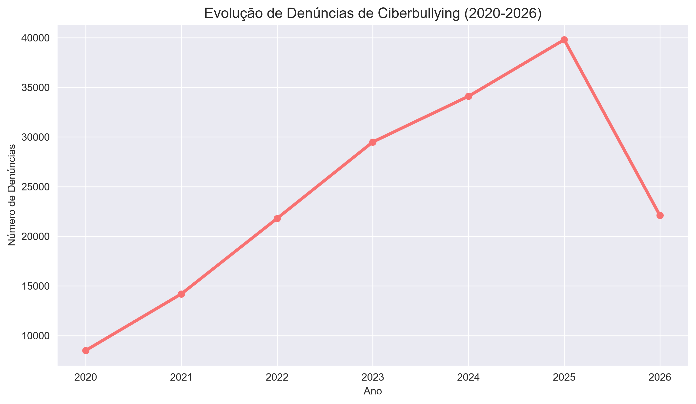
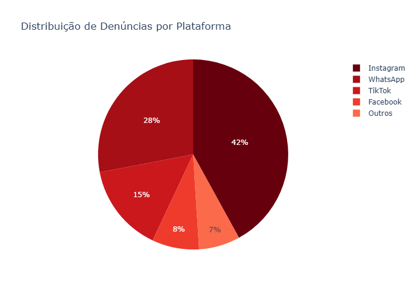
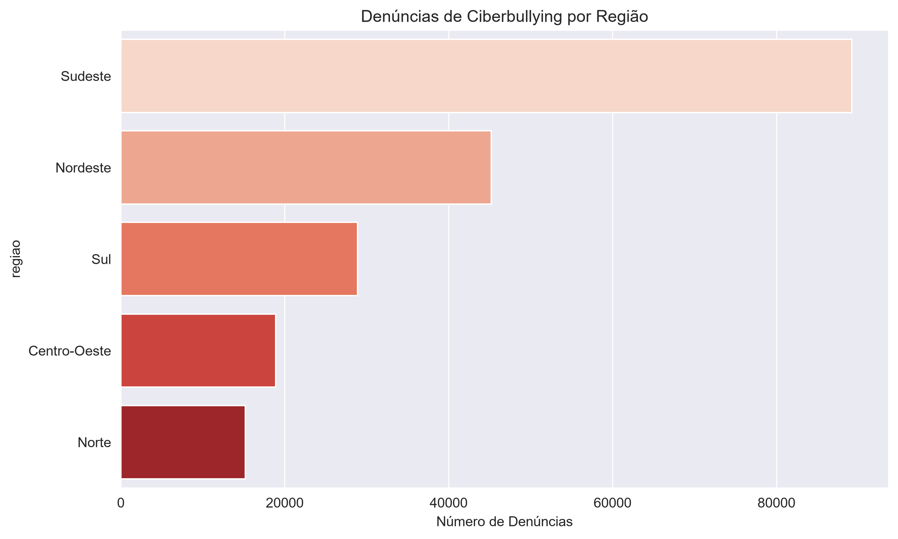

Análise Integrada de Denúncias de Violência Online no Brasil (2020–2026)
Projeto de Análise de Dados (PAD) — Universidade de Brasília
Fonte dos dados: SaferNet, Anuário Brasileiro de Segurança Pública e Ministério Público.
Processamento: Python (pandas, matplotlib, plotly) + Dashboard interativo com Chart.js.
Objetivo: Tornar os dados acessíveis, visualizáveis e reprodutíveis.
170.000
68%



O ciberbullying apresenta crescimento contínuo, com forte concentração em adolescentes e nas principais redes sociais. O dashboard demonstra a urgência de políticas públicas mais efetivas de proteção digital.
Baixar Dados Completos Ver Repositório